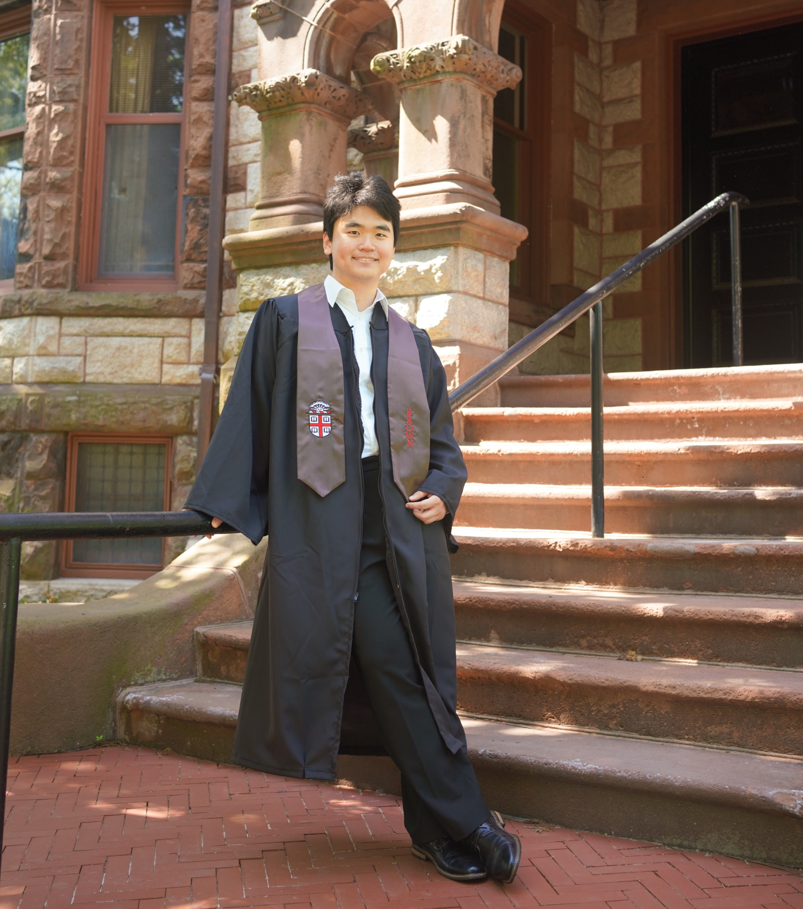

Jiapeng (Jasper) Chen
Doctoral Student at Stanford University, Department of Geophysics
email: jiapchen@stanford.edu

Education
Sc.B. in Applied Mathematics with Honors, Brown University. (2020-2024)
A.B. in Computer Science, Brown University. (2020-2024)
Research Experience
Brown University, Department of Earth, Environmental, and Planetary Sciences. (2023-)
Advanced the use of
information theory for predictability quantification in ensemble climate models and used it to interpret the signal-to-noise paradox.
University of Pennsylvania, Perelman School of Medicine. (2023)
Developed an autoencoder based on the U-Net trained on a small dataset to perform attenuation correction in PET/CT imaging.
Brown University, School of Engineering. (2022-)
Developed a Chebyshev pseudospectral method to solve a fourth-order linear stability problem arising from an active shear flow of rod-like molecules.